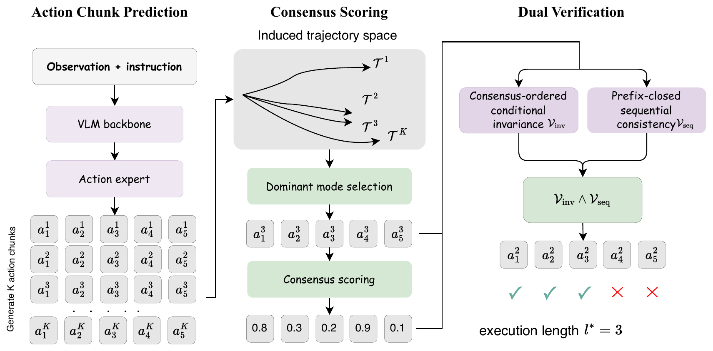
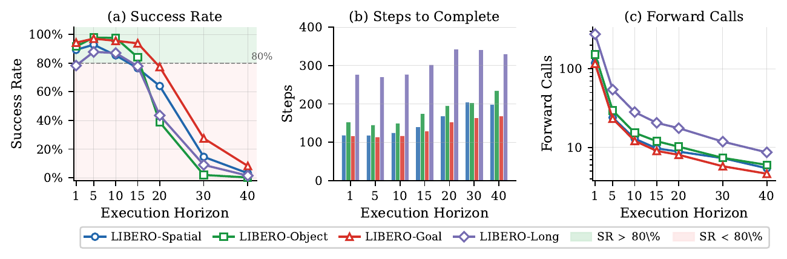
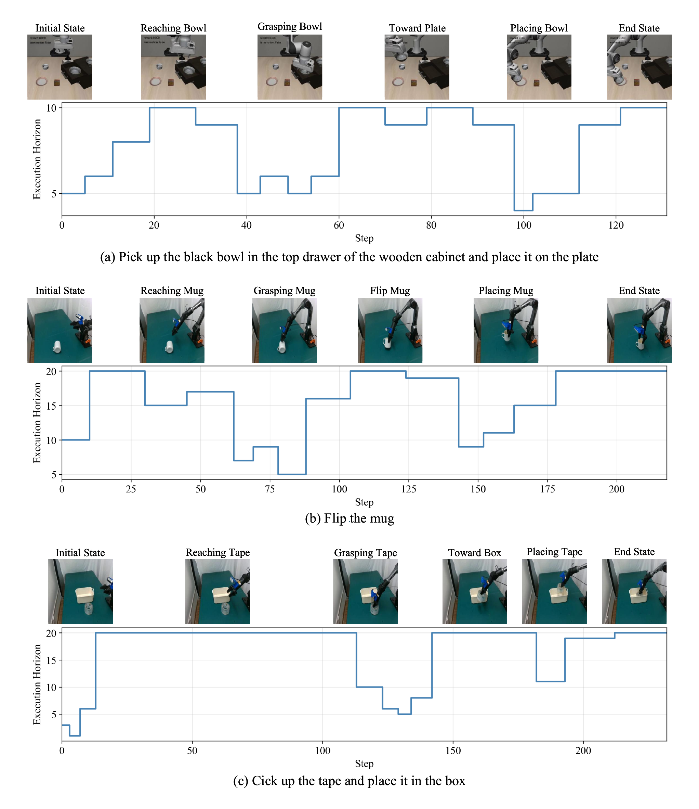

Vision-Language-Action models often predict a short chunk of future actions in one forward pass, but deciding how many actions to execute before replanning remains a brittle fixed-horizon choice. A3 introduces Adaptive Action Acceptance, a self-speculative prefix verification mechanism for dynamic execution commitment. A3 samples candidate action chunks, estimates trajectory-wise consensus, and verifies the selected draft with two constraints: consensus-ordered conditional invariance and prefix-closed sequential consistency. The final execution horizon emerges as the longest verified prefix, eliminating manual horizon tuning while preserving the trade-off between execution robustness and inference throughput.

A3 is organized around three core pieces:
| Backbone | Method | LIBERO Avg. (%) | LIBERO Len. | MetaWorld Avg. (%) | MetaWorld Len. | ManiSkill Avg. (%) | ManiSkill Len. |
|---|---|---|---|---|---|---|---|
| pi-0 | Original | 95.1 | 5.0 | 78.0 | 3.0 | 77.6 | 5.0 |
| MoH | 95.1 | 5.0 | 79.4 | 3.0 | 78.0 | 5.0 | |
| A3 (Ours) | 95.3 | 9.4 | 79.2 | 3.2 | 78.6 | 6.2 | |
| pi-0.5 | Original | 97.9 | 6.3 | 77.8 | 3.0 | 88.1 | 5.0 |
| MoH | 97.7 | 5.0 | 78.4 | 3.3 | 88.4 | 5.0 | |
| EverydayVLA | 97.6 | 6.8 | - | - | - | - | |
| AutoHorizon | 96.9 | - | - | - | - | - | |
| A3 (Ours) | 98.1 | 9.7 | 79.4 | 4.5 | 89.1 | 5.2 | |
| GR00T | Original | 90.1 | 4.7 | - | - | - | - |
| A3 (Ours) | 92.9 | 4.5 | - | - | - | - |
| Setting | Exec Horizon | FlipMug | TapeBox | HangMug | StackCube | Avg. Success | Inference Calls |
|---|---|---|---|---|---|---|---|
| Fixed | 5 | 50.0 | 35.0 | 25.0 | 0.0 | 27.5 | 91.5 |
| Fixed | 10 | 70.0 | 100.0 | 35.0 | 66.7 | 67.9 | 32.7 |
| Fixed | 15 | 95.0 | 100.0 | 35.0 | 86.7 | 79.2 | 17.7 |
| Fixed | 20 | 90.0 | 95.0 | 35.0 | 73.3 | 73.3 | 12.4 |
| A3 (Ours) | 13.5 | 95.0 | 100.0 | 60.0 | 83.3 | 84.6 | 17.2 |


@article{chen2026dynamic,
title={Dynamic Execution Commitment of Vision-Language-Action Models},
author={Chen, Feng and Wang, Xianghui and Chen, Yuxuan and Li, Boying and He, Yefei and Zhang, Zeyu and Wu, Yicheng},
journal={arXiv preprint arXiv:2605.11567},
year={2026}
}